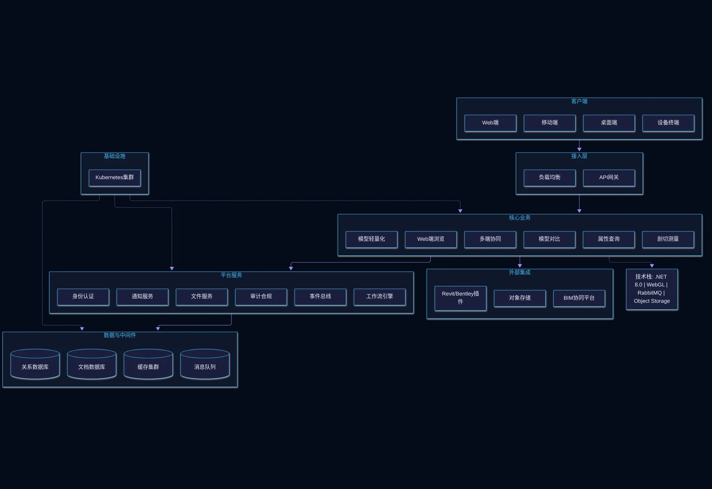

BIM轻量化系统是将大型BIM模型轻量化后在Web端与移动端流畅浏览的协同审阅平台。针对传统BIM模型文件庞大、在Web端和移动端加载缓慢、浏览卡顿的痛点，系统通过模型压缩转换、Web端流畅浏览、多端协同审阅、模型对比与属性查询等功能，让大体量三维模型在各类终端上高效运行，帮助团队实现跨地域协同设计与施工现场精准校核。

核心功能
系统覆盖模型轻量化、Web浏览、多端协同、模型对比、属性查询与剖切测量六大核心模块。
模型轻量化
通过智能压缩与几何优化算法自动处理Revit、Bentley等原生模型，文件体积缩减80%以上。
Web端浏览
基于WebGL渲染引擎，无需安装任何插件。
多端协同
支持PC、平板、手机多端同步查看与协作批注。
模型对比
自动比对不同版本模型，以高亮方式直观呈现设计变更内容。
属性查询
点击任意构件即可查看完整工程属性信息。
剖切测量
支持任意角度剖切、距离测量、面积测量与体积测量。
系统架构
系统架构

系统采用BIM轻量化流水线架构：Revit插件端上传原生模型，经模型转换服务轻量化处理后存入对象存储；Web端通过WebGL渲染引擎实时加载交互；底层基于.NET 8.0+微服务平台，RabbitMQ驱动异步事件。
应用场景
适用于大体量模型Web浏览、多方协同审阅、模型版本变更对比、现场剖切测量校核等场景。

大体量模型Web浏览
通过智能压缩与几何优化算法将原生BIM模型体积缩减80%以上，Web端无需插件即可流畅浏览。

多方协同审阅
支持PC、平板、手机多端同步查看与协作批注，设计、施工、业主跨地域协同。

模型版本变更对比
自动比对不同版本模型，以高亮方式直观呈现设计变更内容，便于版本管理。

现场剖切测量校核
支持任意角度剖切、距离测量、面积测量与体积测量，为施工现场提供精准校核依据。
优势与保障
核心优势
多格式支持
支持Revit、Bentley、SketchUp等主流BIM软件格式，兼容性强。
云端存储
模型数据云端存储，全球访问无延迟，跨地域协作高效。
无需插件
基于WebGL渲染引擎，Web端无需安装任何插件，降低使用门槛。
微服务架构
底层基于.NET 8.0+微服务平台，易于扩展与维护。
交付服务
需求调研
深入了解设计团队与施工方协同需求，制定个性化实施方案。
系统部署
支持私有云与公有云部署，适配不同安全等级需求。
培训上线
提供管理员与终端用户分层培训，确保系统顺利上线。
服务保障
持续运维
7×24小时技术支持，定期系统升级与功能迭代。